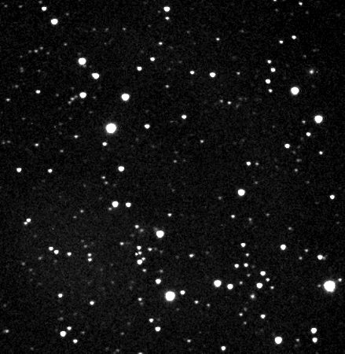
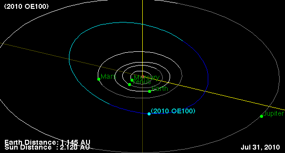

D21 Shenton Park finds its third main belt asteroid during routine recovery work on July 20. The asteroid's orbit appears more eccentric and have lower perihelion than
typical main belters. At a magnitude close to 19, the object appears clearly in this compilation of 300s images ...

Orbit prediction (courtesy of the JPL Small-Body Database Browser):
